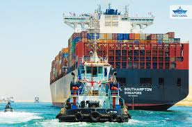
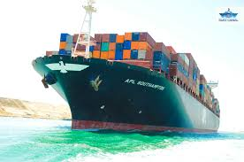

قناة السويس هي ممر مائي اصطناعي يربط بين البحر الأبيض المتوسط والبحر الأحمر.
تم افتتاحها في عام 1869 وتُعد من أهم الممرات المائية في العالم
تم تأميمها عام 1956 من قبل الرئيس جمال عبد الناصر.
تم توسيعها بمشروع قناة السويس الجديدة عام 2015 لتسهيل حركة الملاحة.
قناة السويس
اتمر آلاف السفن عبر قناة السويس سنويًا، مما يجعلها واحدة من أهم الممرات البحرية في العال


قناة السويس الجديدة وأهميتها
قناة السويس الجديدة هي مشروع تطويري استراتيجي يهدف إلى تحسين حركة الملاحة العالمية وزيادة القدرة الاستيعابية للقناة، مما يساهم في تعزيز الاقتصاد المصري.
تقع القناة في مصر وتربط بين البحر الأحمر والبحر الأبيض المتوسط، مما يجعلها ممرًا مائيًا هامًا للتجارة العالمية
تساهم القناة في تقليل زمن عبور السفن وزيادة الإيرادات السنوية لمصر، كما أنها تدعم مشروعات التنمية الاقتصادية والاستثمارية في المنطقة المحيطة بها
قناة السويس الجديدة
قناة السويس الجديدة
قناة السويس الجديدة هي مشروع لتوسيع قناة السويس الأصلية بهدف تقليل زمن عبور السفن وزيادة حركة الملاحة العالمية.